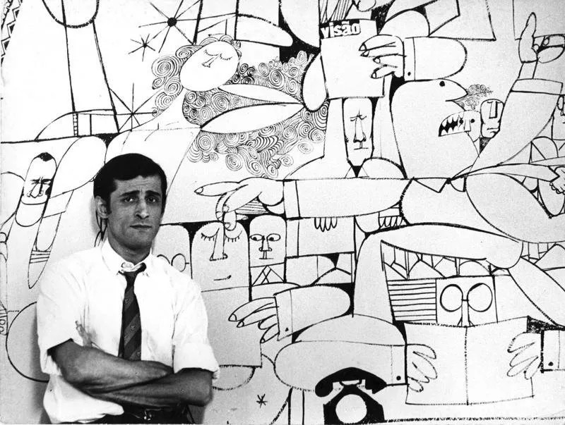

Arquétipo psicológico e Vínculos Maternos
A Supermãe simboliza o excesso de vínculo entre mãe e filho — ela é, ao mesmo tempo, o salvador e o oceano sufocante. Essa ambivalência revela uma relação simbiótica: ela quer o filho à parte, mas também quer reabsorvê-lo, à imagem de uma "mãe-ventre" omnipresente. O comportamento de Carlinhos é um reflexo, onde muitos dos filhos parecem com deficiência de autonomia — a chamada “síndrome do canguru” , onde o filho não se desprende da figura materna.
Transformação narrativa
O Almanaque dos 50 anos mostra a evolução da personagem: ela passa de mãe, para sogra, até superavó de Carlinhos — revela amadurecimento ao longo do tempo . A trajetória acompanha o ciclo da vida: maternagem , emancipação do filho , casamento , geração seguinte — tudo com humor e sensibilidade .
